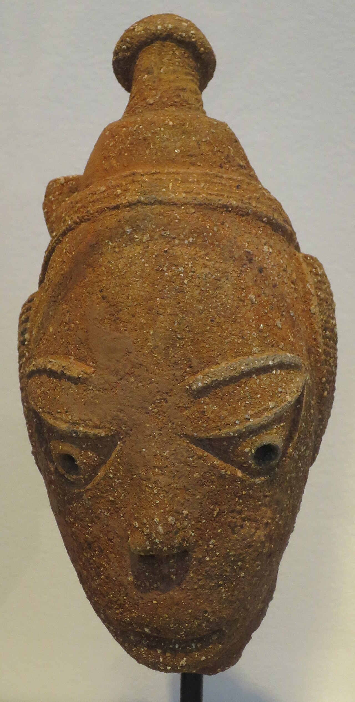
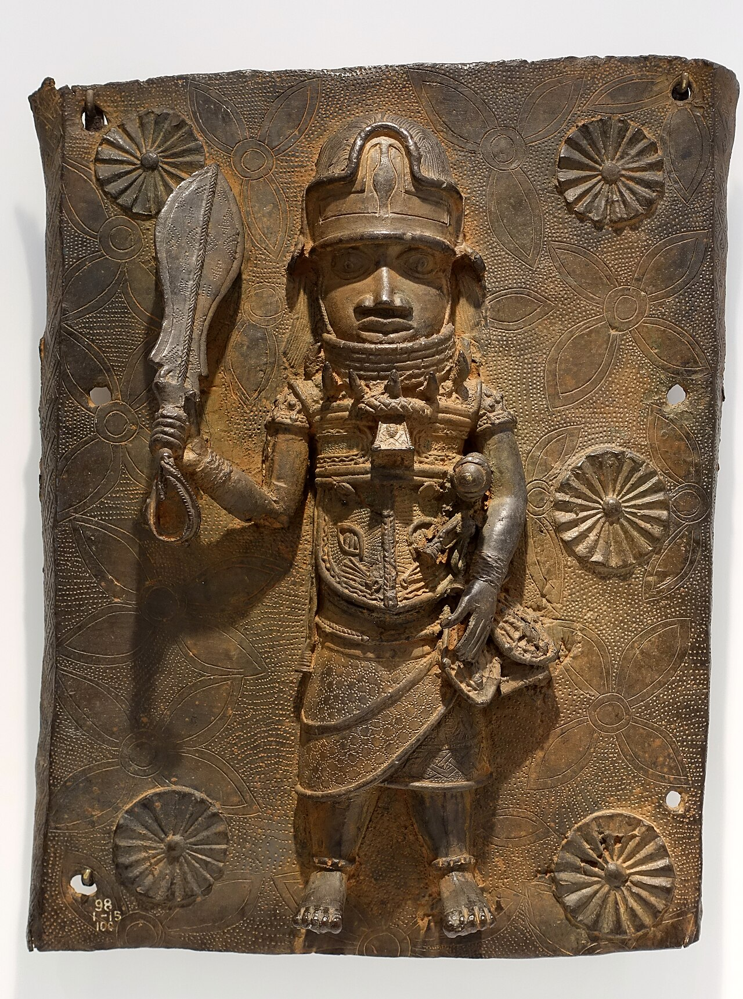
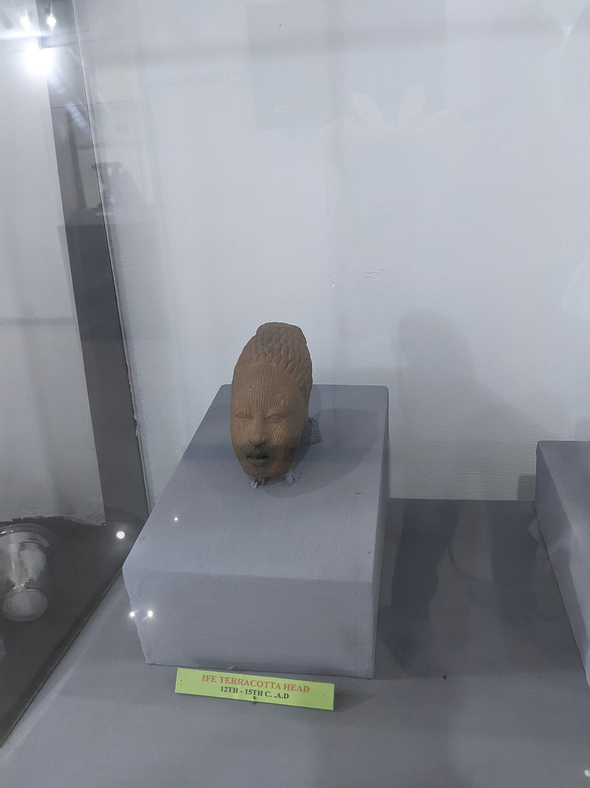
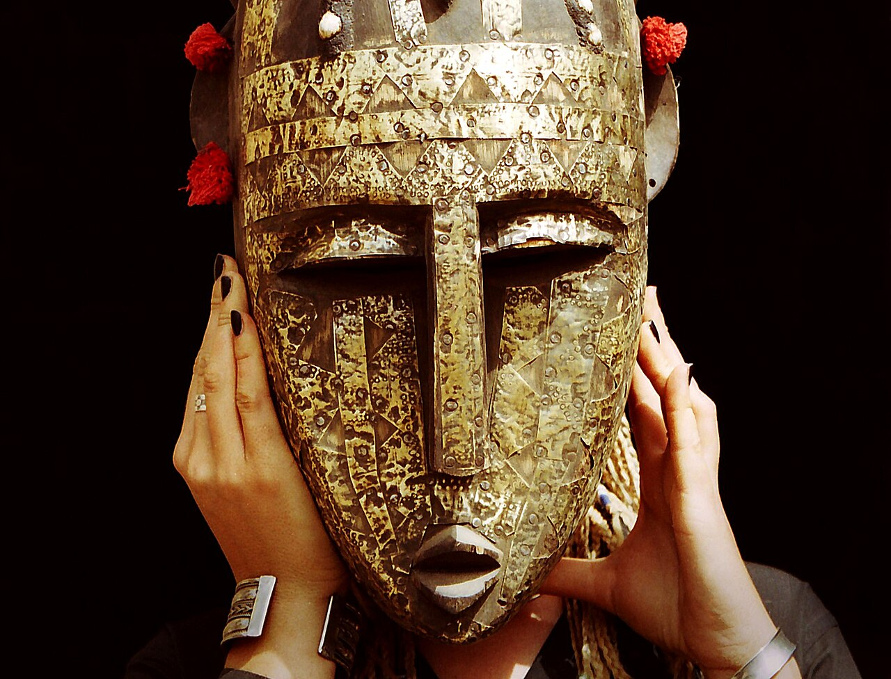
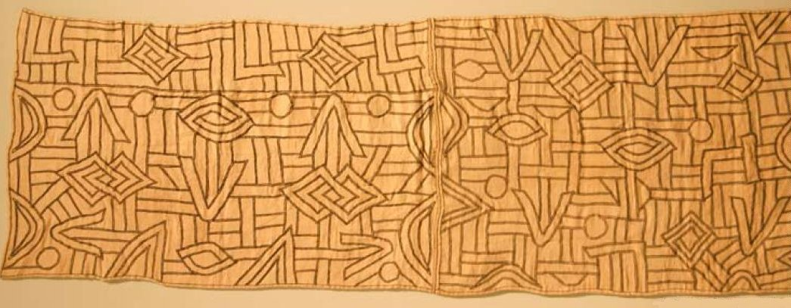
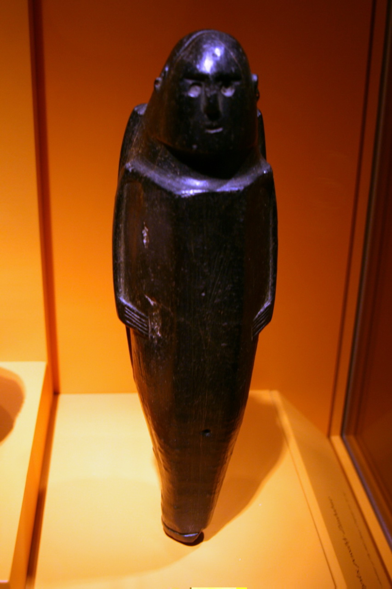
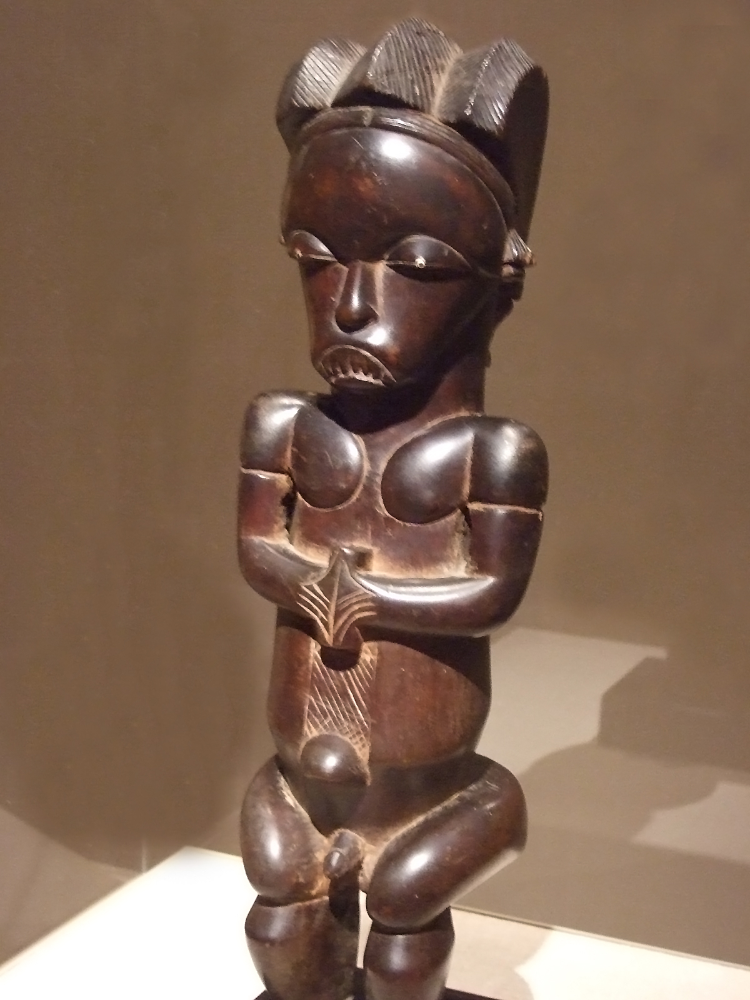
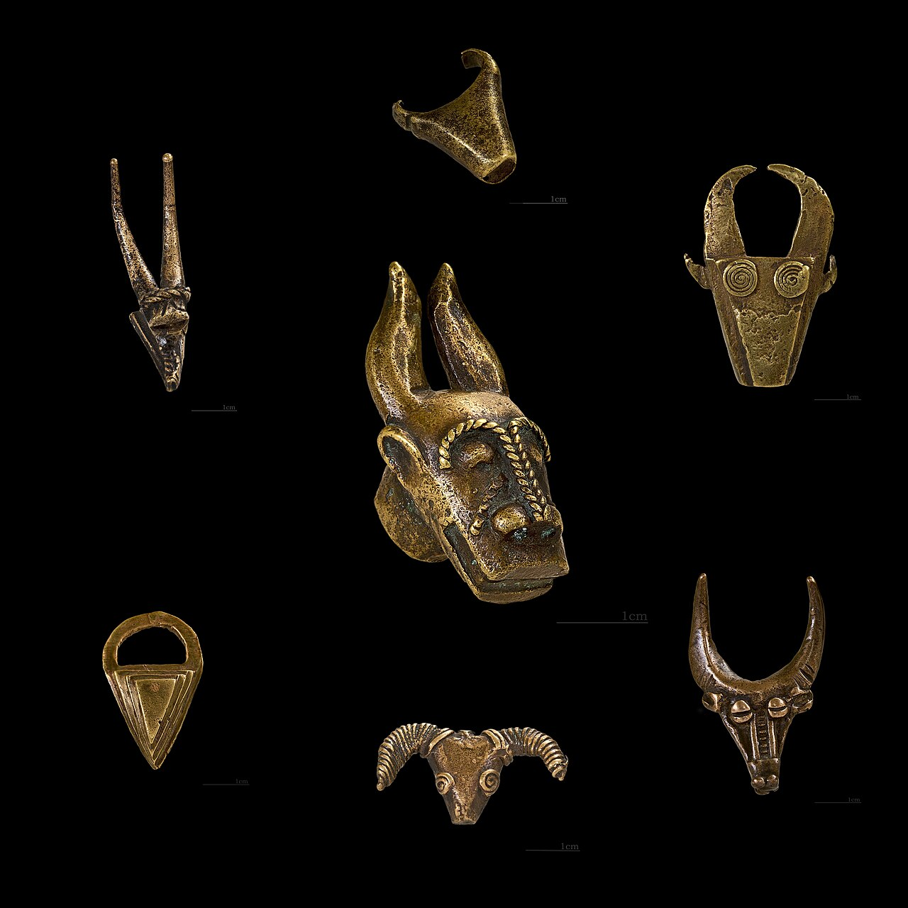
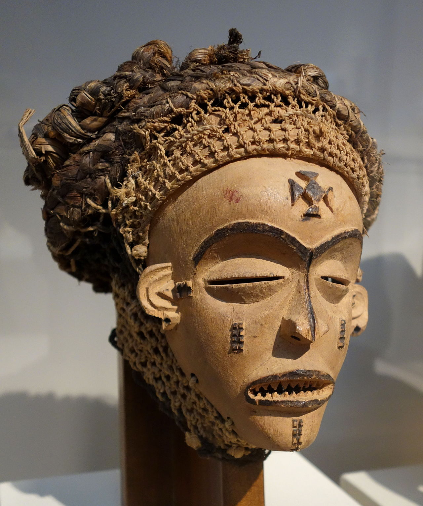
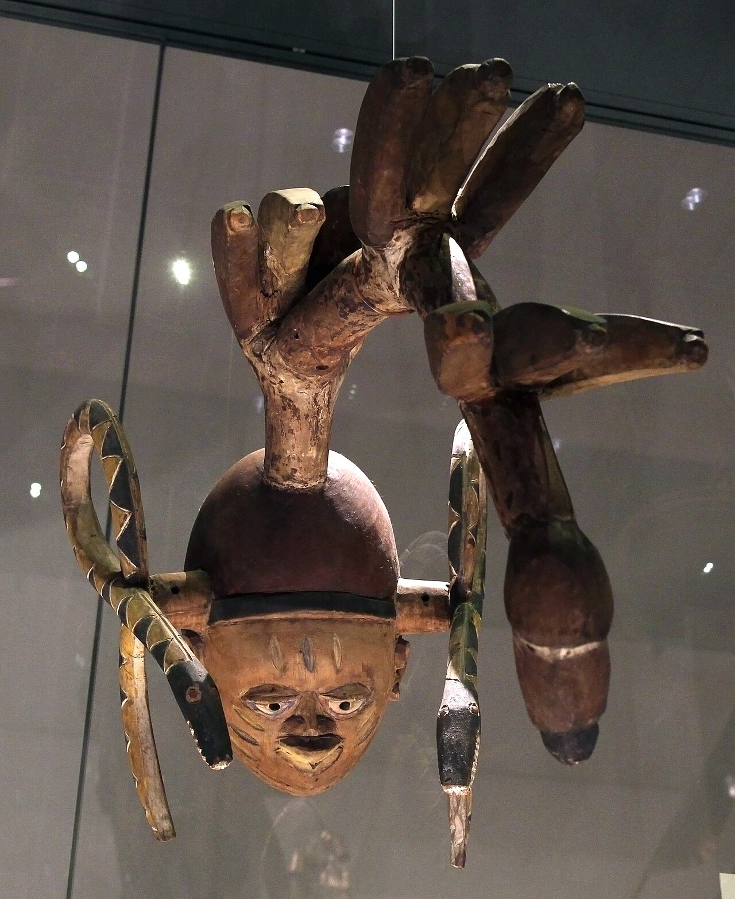

🏆 Meesterwerk: Nok Terracotta Hoofd
Een van de oudste bekende Afrikaanse sculpturen - 2500 jaar oud uit Nigeria

Nok Cultuur, ca. 500 v.Chr. - 200 n.Chr. · Terracotta · Nigeria
🎨 STIJLFIGUREN & THEMA'S
🗿 Abstraktie
Stijlisering: Menselijke figuren vereenvoudigd tot essentiële vormen. Geometrische patronen.
🎭 Maskers
Rituele kunst: Houten maskers voor ceremonies. Verbinding met voorouders en geesten.
🪘 Materialen
Natuurlijk: Hout, ivoor, brons, terracotta, kralen. Elk materiaal met symbolische betekenis.
⚡ Energie
Dynamiek: Beweging en spanning in sculpturen. Levendige expressie ondanks abstractie.
📚 TIJDSGEEST CONTEXT
🌍 POLITIEK PERSPECTIEF
De politieke geschiedenis van Afrika vormt een complex weefsel dat direct zichtbaar is in de kunstproductie door de eeuwen heen. In de pre-koloniale periode floreerden machtige koninkrijken zoals het Beninrijk (1440-1897), het Koninkrijk Ife (11e-15e eeuw), het Ashanti-rijk (1670-1957) en het Koninkrijk Kongo (1390-1914). Deze koninkrijken ontwikkelden verfijnde artistieke tradities die dienden als instrumenten van machtsprojectie en legitimatie. De beroemde Benin-bronzen (16e-17e eeuw) illustreren dit perfect: deze geometrisch gestileerde plaquettes en hoofden werden vervaardigd door het gilde van koninklijke ambachtslieden om de oba (koning) te eren en zijn genealogie te documenteren. Het Ife-terracotta hoofd (12e-14e eeuw) toont een ongekende naturalistische precisie die de goddelijke status van de koning benadrukte – het gezicht is zo levensecht dat het als portret fungeerde van de heerser.
De politieke structuur van deze samenlevingen weerspiegelde zich direct in de kunst. Het Benin-bronzen hoofd van de koningin-moeder (16e eeuw) symboliseert de belangrijke politieke rol van vrouwen aan het hof, terwijl de Asante-gouden gewichten (18e-19e eeuw) uit Ghana niet alleen economische instrumenten waren, maar ook politieke propaganda: de afgebeelde spreekwoorden en symbolen versterkten de macht van de Asantehene (koning). De Kongo-power figures (nkisi) vertonen een directe link tussen politieke autoriteit en spirituele macht: deze houten beelden met ingebedde spijkers en medicinaal materiaal werden door priesters gebruikt om recht te spreken en orde te handhaven.
De komst van Europese kolonialisme in de 19e eeuw had een verwoestende impact op de Afrikaanse kunstproductie. Het Britse blokkade van Benin in 1897 resulteerde in de plundering van duizenden kunstwerken, waarvan veel nu in Westerse musea verblijven. Deze traumatische ervaring werd later verwerkt in hedendaagse kunstwerken zoals de Benin-bronzen replica's van hedendaagse Nigeriaanse kunstenaars die de koloniale geschiedenis thematiseren. De trans-Atlantische slavenhandel (16e-19e eeuw) verspreidde Afrikaanse artistieke tradities naar het Amerikaanse continent, waar ze zich ontwikkelden tot nieuwe vormen zoals de Braziliaanse Candomblé-kunst en Haitiaanse Vodou-vlaggen. In de Afrikaanse diaspora ontstond een complexe identiteitsvraagstuk dat kunstenaars bleef inspireren tot op de dag van vandaag.
De dekolonisatie in de jaren 1960 bracht een culturele herwaardering teweeg. Onafhankelijke Afrikaanse naties zochten naar artistieke identiteiten die zowel moderne als traditionele elementen incorporeerden. De Negritude-beweging (1930s-1960s) propageerde een trots zwart bewustzijn, wat leidde tot een heropleving van traditionele vormen in hedendaagse kunst. Moderne Afrikaanse kunstenaars zoals El Anatsui (Ghana) en Yinka Shonibare (Nigeria/Groot-Brittannië) verwerken koloniale geschiedenis en diaspora-ervaringen in hun werk. Anatsui's metalen kap-installaties (gemaakt van gerecyclede drankflesdoppen) verwijzen naar de trans-Atlantische handel en de economische uitbuiting van Afrika, terwijl Shonibare's Victoriana-kostuums op mannequins met Afrikaanse stoffen de koloniale geschiedenis ironisch commentariëren.
De politieke symboliek in traditionele maskers illustreert hoe kunst macht visualiseerde en legitimeerde. Het Kuba-masker (Bwoom) uit Congo toont een koninklijke figuur met een gezwollen voorhoofd dat koninklijke intelligentie symboliseert. Het Dan-masker uit Ivoorkust werd gebruikt bij rechtszittingen om de waarheid te spreken – de drager transformeerde in een spirituele rechter die boven menselijke politiek stond. De Chokwe-muwana pwo-maskers beelden idealiseerde vrouwelijke schoonheid af en versterkten zo de politieke macht van de mannelijke elite door vrouwen te reduceren tot esthetische objecten. Deze maskers functioneerden niet als louter decoratie, maar als actieve instrumenten in het politieke systeem: ze legitimeerden leiderschap, handhaafden sociale orde en visualiseerden de goddelijke oorsprong van koninklijke macht.
📚 LITERAIR PERSPECTIEF
De Afrikaanse kunst is onlosmakelijk verbonden met een rijke orale traditie die eeuwenlang kennis, geschiedenis en waarden heeft overgedragen. De griot (of jeli) – een West-Afrikaanse verhalenverteller, muzikant en historicus – speelde een cruciale rol in het bewaren van collectieve herinnering. Deze orale tradities visualiseerden zich direct in kunstwerken. Het Benin-bronzen plaquette toont vaak scènes uit de koninklijke geschiedenis, fungerend als een 'gebeeldhouwde geschiedenisboek' die de oba's heldendaden documenteerde voor toekomstige generaties. De Senufo-figuur (Poro society) uit Ivoorkust en Mali beeldt mythische voorouders af die in orale verhalen centraal stonden – deze beelden fungeerden als fysieke ankers voor vertellingen over schepping en oorsprong.
Mythen en legenden vormden de ruggengraat van veel kunstproductie. Het Dogon-kanaga-masker uit Mali verwijst naar de mythe van de eerste mens die uit de hemel viel – het masker, met zijn karakteristieke bovenarmachtige vorm, stelt de beweging voor van de dalende voorvader. Tijdens de dama-begrafenisceremonie vertellen griots deze scheppingsmythe terwijl dansers het masker dragen, waardoor het object een verhaal tot leven brengt. De Kuba-ndop-standbeelden uit Congo – portretten van overleden koningen – werden vergezeld van orale geschiedenissen die de daden van elke heerser vertelden. Zonder de bijbehorende verhalen zou het beeld zijn betekenis verliezen; kunst en literatuur waren onafscheidelijk.
Een opmerkelijke traditie is de visualisatie van spreekwoorden in sculpturen. De Akan-gouden gewichten (mrammou) uit Ghana beelden letterlijk spreekwoorden af die diepe filosofische en ethische lessen bevatten. Een gewicht dat een aduane (buitenkijker) toont, verwijst naar het spreekwoord 'De buitenkijker ziet meer dan de deelnemer' – een commentaar op perspectief en wijsheid. Deze kleine bronzen sculpturen fungeerden als conversation pieces tijdens vergaderingen, waarbij elk object een discussie over moraliteit, politiek of sociale relaties kon initiëren. De Yoruba-vereenvoudigde sculpturen (ere ibeji) – dubbele beelden van tweelingen – verbeelden het spreekwoord 'Tweelingen zijn twee keer gezegend', maar ook het verdriet van overleden tweelingen, waarbij het beeld als vervanging fungeert.
De symboliek in maskers en beelden weerspiegelde complexe literaire concepten. Het Bamileke-kamerscherm-masker uit Kameroen, met zijn ornate geometrische patronen, vertegenwoordigt de koninklijke verhalen over de oorsprong van de dynastie – elk patroon is een symbool dat een verhaal oproept. De Benin-ivoren maskers (16e eeuw) dragen Portugese motieven die de contacten met Europeanen documenteren, fungerend als een visueel journaal van diplomatieke relaties. Zelfs de abstracte vorm van een Fang-byeri-reliquaire (Gabon) – een gestileerd menselijk hoofd op een kistje met voorouderbotten – verbindt met orale tradities over voorouders die de familie beschermen, waarbij het object als fysieke manifestatie van het verhaal fungeert.
Hedendaagse Afrikaanse kunstenaars zetten deze literaire traditie voort. Wangechi Mutu's (Kenia) collage-sculpturen combineren Afrikaanse mythologie met feministische verhalen, waarbij ze oude orale tradities herinterpreteren voor moderne tijden. William Kentridge's (Zuid-Afrika) geanimeerde tekenfilms vertellen verhalen over apartheid en kolonialisme, gebruikmakend van een visuele taal die Afrikaanse verteltradities respecteert. De link tussen literatuur en kunst blijft sterk: zonder de verhalen zijn de objecten slechts decoratie; mét de verhalen worden ze levende documenten van cultureel geheugen, filosofische discussie en historische getuigenis.
🧠 PSYCHOLOGISCH PERSPECTIEF
De Afrikaanse kunst weerspiegelt een diep psychologisch begrip van identiteit, voorouderverering en collectief bewustzijn. In veel traditionele samenlevingen was het individuele zelf minder belangrijk dan de gemeenschappelijke identiteit. Dit manifesteerde zich in kunst die niet als 'expressie van het individu' bedoeld was, maar als instrument voor collectieve ervaring. De Fang-reliquaire byeri (Gabon, Kameroen, Equatoriaal-Guinea) illustreert dit perfect: deze gestileerde hoofden werden op kistjes met voorouderbotten geplaatst en fungeerden als tussenpersoon tussen levenden en doden. De abstractie – grote ogen, vereenvoudigde gelaatstrekken – was geen esthetische keuze, maar een psychologische: het beeld moest herkenbaar zijn als mens, maar ook als bovennatuurlijk wezen, een symbool van collectieve voorouderschap.
Voorouderverering vormde de psychologische basis voor veel kunstproductie. De Dogon-voorouderbeelden uit Mali beelden idealiseerde voorouders af die als tussenpersonen fungeerden tussen de levende gemeenschap en de spirituele wereld. Deze beelden werden niet als portretten beschouwd, maar als psychologische verankeringen – fysieke punten waar families hun herinneringen en emoties konden projecteren. De Yoruba-ere ibeji-tweelingbeelden dienden een specifieke psychologische functie: wanneer een tweeling stierf, werd het beeld verzorgd, gevoed en gekleed alsof het kind nog leefde, wat een rouwproces mogelijk maakte dat de psychische breuk van verlies verzachtte.
Rituele kunst en trance vormden een psychologisch veld waar kunst niet slechts bekeken werd, maar ervaren. Het Bwami-masker (Lega) uit Congo werd gebruikt in inwijdingsrites waarbij deelnemers in trance raakten, en het masker transformeerde van een object naar een spiritueel wezen. De abstractie van het masker – vaak minimaal, met slechts een paar symbolische kenmerken – was functioneel: het moest herkenbaar genoeg zijn om angst op te roepen, maar abstract genoeg om projectie mogelijk te maken. De Ekpe-maskers van de Efik/Ibibio in Nigeria, gebruikt door het geheime Ekpe-genootschap, creëerden een psychologische ruimte waar machtsstructuren konden worden besproken en bevestigd, zonder dat individuen zich persoonlijk kwetsbaar opstelden – het masker beschermde de psyché.
De collectieve versus individuele expressie is een cruciaal onderscheid. In veel Westerse kunsttradities is het individu de bron van creativiteit; in Afrikaanse tradities is de kunstenaar vaak een 'kanaal' voor collectieve energie. De Benin-bronzen werden niet door individuele kunstenaars gesigneerd, maar door het koninklijke gilde geproduceerd, wat de nadruk legde op ambacht en collectieve kennis boven individuele roem. De Asante-kente-weefsels (Ghana) volgen strikte patronen die generaties lang zijn overgeleverd; de wever is een uitvoerder, geen individueel genie. Dit betekent niet dat er geen individuele variatie bestaat – de Dogon-architectuur toont subtiele verschillen tussen families – maar de psychologische basis is collectief: de kunstenaar dient de gemeenschap, niet zichzelf.
Abstractie in Afrikaanse kunst kan worden begrepen als psychologische expressie. De Tsonga-kopstukken (Zuid-Afrika) met hun geometrische vormen zijn geen 'primitieve' pogingen tot realisme, maar bewuste keuzes om essentie boven uiterlijk te stellen. De Kongo-nkisi-power figures met hun ingebedde spijkers en materiaal fungeren als psychologische batterijen: elke spijker vertegenwoordigt een overeenkomst, een belofte, een emotionele lading. Het object is geen esthetische ervaring, maar een psychologische tool – een fysieke manifestatie van mentale en spirituele energie. Deze psychologische functionaliteit verklaart waarom Afrikaanse kunst vaak minder 'mooi' lijkt in Westerse ogen: de bedoeling is niet esthetisch genot, maar psychologische transformatie.
📜 HISTORISCH PERSPECTIEF
De historische ontwikkeling van Afrikaanse kunst volgt een tijdlijn die duizenden jaren omspant, beginnend met de Nok-cultuur (ca. 1000 v.Chr. - 300 n.Chr.) in wat nu Nigeria is. De Nok-terracotta beelden – met hun karakteristieke gestileerde gezichten, grote ogen en complexe kapsels – vertegenwoordigen de eerste bekende Afrikaanse kunst buiten Egypte. Deze terracotta's tonen een opvallend naturalistische stijl die eeuwen later zou terugkeren in Ife-kunst. De technologische innovatie van terracottabranden vereiste geavanceerde ovens en klimaatbeheersing, wat wijst op een georganiseerde samenleving. De Nok-terracotta hoofd (500 v.Chr. - 200 n.Chr.) toont niet alleen artistieke vaardigheid, maar ook een maatschappij die permanentheid nastreefde: terracotta overleeft hout, wat de wens weerspiegelt om kunst en kennis voor toekomstige generaties te bewaren.
De trans-Atlantische slavenhandel (16e-19e eeuw) vormt een historische breuklijn die onomkeerbare gevolgen had voor Afrikaanse kunst. Miljoenen Afrikanen werden gedeporteerd, en met hen verdwenen kennis, tradities en kunstvormen. De Kongo-crucifixen – syncretische objecten die christelijke en Afrikaanse symboliek combineerden – documenteren deze traumatische periode. De Kongo-koningen omarmden het christendom als politieke strategie, wat leidde tot unieke kunstvormen zoals het Kongo-Christusbeeld met Afrikaanse gelaatstrekken en lokale materialen. De slavenhandel verspreidde Afrikaanse esthetiek naar het Amerikaanse continent, waar nieuwe vormen ontstonden: Braziliaanse Candomblé-altaren, Cubaanse Santería-beelden en Haitiaanse Vodou-vlaggen zijn directe afstammelingen van Afrikaanse tradities, maar getransformeerd door de nieuwe context.
De 20e eeuw bracht een complexe wisselwerking tussen kolonialisme, onafhankelijkheid en culturele herwaardering. Tijdens de koloniale periode werden veel Afrikaanse kunstobjecten naar Europese musea gebracht, vaak onder dwang of via ongelijke ruilhandel. De Benin-bronzen (veroverd in 1897) werden in Berlijn, Londen en andere steden tentoongesteld, waar ze Westerse kunstenaars beïnvloedden (zoals Picasso en Matisse). Na de onafhankelijkheid in de jaren 1960 ontstond een culturele beweging die traditionele kunst nieuw leven inblies. De Nigeriaanse hedendaagse kunstenaars zoals Ben Enwonwu combineerden Afrikaanse thema's met moderne technieken, wat leidde tot werken zoals zijn Christusbeeld (Onitsha) dat Afrikaanse en christelijke iconografie fusioneerde.
Technische evolutie in materialen volgde historische ontwikkelingen. De vroege Nok-cultuur gebruikte terracotta; de Ife-periode (11e-15e eeuw) introduceerde brons en koper, wat wijst op handelscontacten met Noord-Afrika en het Midden-Oosten. De Ife-bronzen hoofden vereisten lost-wax casting (cire perdue), een techniek die grote vaardigheid en organisatie vereist. De Benin-bronzen (16e-19e eeuw) vertonen een verdere verfijning, met complexe geometrische patronen en realistische portretten. Houtsnijwerk – zoals de Dogon-houten beelden – is minder duurzaam, maar biedt grotere vrijheid voor experiment. De introductie van glassen kralen door Europese handelaren leidde tot nieuwe kunstvormen zoals de Yoruba-kralenkroon (ade), die traditionele koninklijke macht visualiseerde met nieuwe materialen.
De historische context verklaart ook regionale verschillen. West-Afrika (Benin, Ife, Yoruba) ontwikkelde rijke bronstradities dankzij handelsroutes met de Sahel en Noord-Afrika. Centraal-Afrika (Kongo, Kuba) specialiseerde in houtsnijwerk en textiel, beïnvloed door tropische klimaten en beschikbaarheid van materialen. Oost-Afrika (Swahili-kust) toont Arabische en Indiase invloeden, zichtbaar in Swahili-houtsnijwerk en architectuur. Zuid-Afrika (Zuid-Afrikaanse rotskunst van de San) bewaarde oude tradities die tot 20.000 jaar teruggaan. Deze historische diversiteit weerlegt het stereotype van 'één Afrikaanse kunst' – de continentale kunstgeschiedenis is even complex als de politieke en economische geschiedenis.
💭 FILOSOFISCH PERSPECTIEF
De Afrikaanse kunst is geworteld in filosofische concepten die fundamenteel verschillen van Westerse tradities. De Ubuntu-filosofie – samengevat in het spreekwoord 'Ik ben omdat wij zijn' – benadrukt gemeenschappelijkheid boven individualisme. Dit vertaalt zich direct in kunst die niet als persoonlijk expressiemiddel fungeert, maar als instrument voor collectieve ervaring. De Bamileke-kamerscherm-maskers (Kameroen) worden tijdens gemeenschappelijke ceremonies gedragen, waarbij de drager zijn individu opgeeft om een spiritueel wezen te worden dat de gemeenschap dient. De abstractie van het masker is geen esthetische keuze, maar een filosofische: het individu wordt onzichtbaar gemaakt om plaats te maken voor het collectieve symbool. De Dogon-gemeenschappelijke altaren – grote structuren met vele beelden – visualiseren deze filosofie: elk beeld vertegenwoordigt een voorouder, maar het totaal is belangrijker dan de delen.
Animisme en de spirituele wereld vormen de filosofische basis voor veel kunstproductie. In veel Afrikaanse wereldbeelden is alles bezield – niet alleen mensen en dieren, maar ook bomen, stenen en kunstobjecten. De Kongo-nkisi-power figures zijn hier een uitstekend voorbeeld van: het houten beeld is geen 'plaatje' van een geest, maar de geest zelf, een levend wezen dat kan communiceren, genezen en straffen. De spijkers die in het beeld worden geslagen, activeren de geest; het object is geen kunstwerk in de Westerse zin, maar een filosofische tool die de grens tussen materie en geest doorbreekt. De Fang-reliquaire byeri fungeert als tussenpersoon tussen de wereld van de levenden en de doden – het beeld is een deur, geen afbeelding.
Het Afrikaanse tijdconcept verschilt fundamenteel van het lineaire Westerse model. Veel Afrikaanse tradities zien tijd als cyclisch – het verleden is niet 'voorbij', maar aanwezig in het heden via voorouders en rituelen. Dit verklaart waarom voorouderbeelden zoals de Dogon-voorouderbeelden niet als historische documenten worden beschouwd, maar als levende entiteiten die actief deelnemen aan gemeenschapsleven. De Yoruba-ere ibeji-tweelingbeelden verbinden verleden en heden: het overleden kind wordt via het beeld 'levend' gehouden, wat de cyclische aard van bestaan visualiseert. De Kuba-ndop-standbeelden van overleden koningen zijn geen portretten, maar actieve deelnemers aan raadsvergaderingen – de koning is 'niet dood', maar aanwezig via zijn beeld.
Abstractie in Afrikaanse kunst kan worden begrepen als filosofische keuze, niet als esthetische beperking. De Tsonga-kopstukken (Zuid-Afrika) met hun geometrische vormen en de Lega-Bwami-maskers met hun minimalistische gelaatstrekken verwerpen realisme niet omdat ze het niet kunnen, maar omdat ze het niet willen. Realisme is in veel Afrikaanse tradities irrelevant – het wezenlijke is niet de uiterlijke vorm, maar de innerlijke essentie. De Ife-terracotta hoofden (die opmerkelijk realistisch zijn) vormen een uitzondering, maar zelfs hier is het realisme symbolisch: het benadrukt de goddelijke perfectie van de koning, niet zijn fysieke gelijkenis. De Benin-bronzen combineren realistische portretten met abstracte geometrische patronen, wat een filosofische dualiteit visualiseert: het individu (realisme) bestaat binnen het collectieve systeem (abstractie).
De relatie tussen zichtbaar en onzichtbaar is een centraal filosofisch thema. In veel Afrikaanse tradities is de zichtbare wereld slechts een fractie van de werkelijkheid; de onzichtbare wereld van voorouders, geesten en krachten is minstens zo belangrijk. Kunst fungeert als brug tussen beide werelden. De Dogon-kanaga-maskers visualiseren de scheppingsmythe: de bovenarmachtige vorm stelt de beweging voor van de hemel naar de aarde, wat de verbinding tussen boven- en benedenwereld symboliseert. De Ekpe-maskers van de Efik/Ibibio creëren een tijdelijke onzichtbare ruimte – de drager is onherkenbaar, wat hem in staat stelt machtskritiek te uiten zonder persoonlijke consequenties. Kunst is hier geen esthetiek, maar epistemologie: het maakt kennis mogelijk over werelden die normaal onzichtbaar zijn.
🖼️ TOP 10 MEESTERWERKEN
1. Nok Terracotta Hoofd (ca. 500 v.Chr. - 200 n.Chr.)
Nok Cultuur · Terracotta · Nigeria
Achtergrond: De Nok cultuur produceerde de eerste bekende terracotta sculpturen in Sub-Sahara Afrika. Deze hoofden tonen geavanceerde technische vaardigheid.
🔍 STIJLANALYSE
Vorm: Stijlvolle abstractie met realistische details. Driehoekige ogen, open mond.
Techniek: Handgevormd terracotta, gedroogd in de zon.
Betekenis: Mogelijk voorouderverering of religieuze ceremonies.
2. Benin Bronzen (16e - 17e eeuw)
Koninkrijk Benin · Brons · Nigeria

Achtergrond: De Benin bronzen zijn een collectie van meer dan 1000 plaquettes en sculpturen die het hof van de Oba (koning) documenteren.
🔍 STIJLANALYSE
Techniek: Cire perdue (verloren was) giettechniek. Hoge kwaliteit metallurgie.
Onderwerp: Hofleven, rituelen, Portugese handelaren, militaire scènes.
Invloed: Getoond de geavanceerde beschaving van pre-koloniaal Afrika.
3. Ife Terracotta Hoofden (12e - 15e eeuw)
Ife Cultuur · Terracotta · Nigeria

Achtergrond: De Ife hoofden zijn beroemd om hun naturalistische stijl en worden beschouwd als meesterwerken van Afrikaanse kunst.
🔍 STIJLANALYSE
Naturalisme: Opvallend realistisch in vergelijking met andere Afrikaanse tradities.
Detail: Fijn uitgewerkte gelaatstrekken, littekens, kapsels.
Symboliek: Verbeelding van heersers en godheden.
4. Dogon Maskers (Traditioneel)
Dogon Volk · Hout · Mali

Achtergrond: De Dogon maken complexe maskers voor dama begrafenisceremonies, die de overledene helpen naar de wereld van de voorouders.
🔍 STIJLANALYSE
Vormen: Kaninmaskers met rechtopstaande oren, zwangere antilopen, vogels.
Kleuren: Aardkleuren - rood, wit, zwart van natuurlijke pigmenten.
Ritueel: Gedanst tijdens uitgebreide ceremonies die dagen duren.
5. Kuba Textiel (Traditioneel)
Kuba Koninkrijk · Raffia · Democratische Republiek Congo

Achtergrond: Kuba textiel staat bekend om zijn complexe geometrische patronen en wordt beschouwd als een van de meest verfijnde textieltradities van Afrika.
🔍 STIJLANALYSE
Patronen: Complex geometrisch - zigzag, ruitvormig, gespiegelde motieven.
Techniek: Raffia palm vezels, cut-pile borduurwerk.
Status: Gedragen door adel, gebruikt als betaalmiddel.
6. Great Zimbabwe Vogel (14e - 15e eeuw)
Koninkrijk Zimbabwe · Steatiet · Zimbabwe

Achtergrond: De Zimbabwe vogels zijn zeven stenen beeldjes gevonden in Great Zimbabwe, waarschijnlijk voorouders of koninklijke macht symboliserend.
🔍 STIJLANALYSE
Vorm: Vogel-op-menselijke-figuur, abstract gestileerd.
Materiaal: Steatiet (zeepsteen), lokaal gewonnen.
Symboliek: Verbinding tussen hemel en aarde, koninklijke autoriteit.
7. Fang Relikwie Bewaker (19e eeuw)
Fang Volk · Hout · Gabon, Kameroen

Achtergrond: De Fang maakten byeri figuren om relikwieën van voorouders te bewaken. Deze sculpturen beïnvloedden Picasso en het kubisme.
🔍 STIJLANALYSE
Vorm: Zittende figuur met handen aan hoofd. Glanzend gepolijst oppervlak.
Expressie: Sereniteit en waakzaamheid.
Invloed: Directe inspiratie voor Europese modernisten.
8. Akan Goudgewichten (15e - 19e eeuw)
Akan Volk · Brons · Ghana, Ivoorkust

Achtergrond: De Akan maakten miniature brons figuurtjes als gewichten voor goudhandel. Elk figuurtje vertelt een verhaal of spreekwoord.
🔍 STIJLANALYSE
Onderwerpen: Dieren, mensen, dagelijks leven, spreekwoorden.
Schaal: Klein, 2-10 cm hoog, zeer gedetailleerd.
Functie: Praktisch (wegen) en educatief (spreekwoorden).
9. Chokwe Pwo Masker (Traditioneel)
Chokwe Volk · Hout · Angola, Democratische Republiek Congo

Achtergrond: Pwo maskers verbeelden de ideale vrouwelijke voorouder. Ze worden gedanst tijdens ceremonies die vrouwelijke waarden vieren.
🔍 STIJLANALYSE
Kenmerken: Grote ogen, kleine mond, ingewikkelde kapsels.
Versiering: Koperplaatjes, kralen, haartooi.
Betekenis: Vruchtbaarheid, schoonheid, moederschap.
10. Yoruba Gelede Masker (Traditioneel)
Yoruba Volk · Hout · Nigeria, Benin

Achtergrond: Gelede maskers eren de kracht van vrouwen (moeders) in de Yoruba samenleving. De bovenkant toont vaak superstructuur scènes.
🔍 STIJLANALYSE
Structuur: Helmmasker met bovenbouw - scenes uit het dagelijks leven.
Kleuren: Polychroom geschilderd in felle kleuren.
Performance: Grote, zware maskers elegant gedanst door mannen.